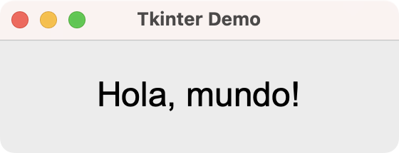
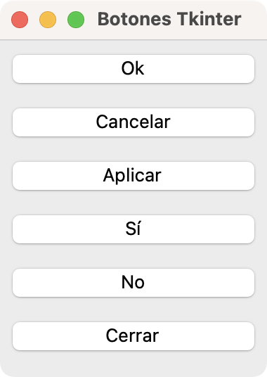
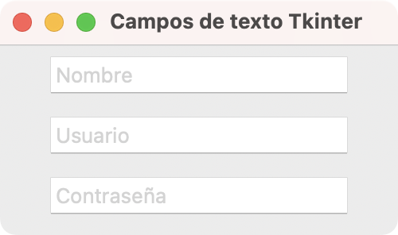
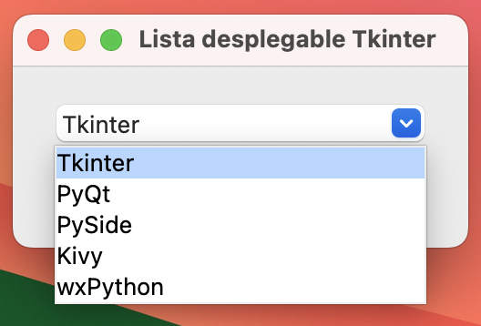
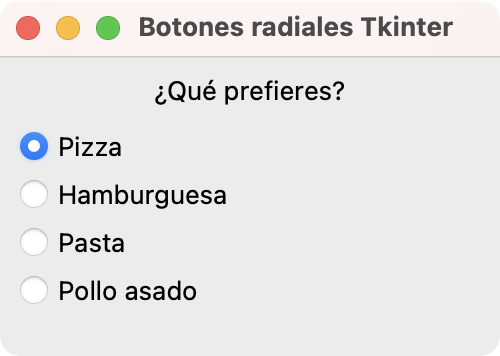
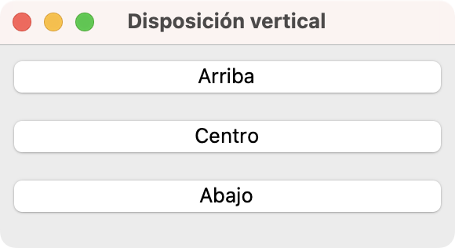
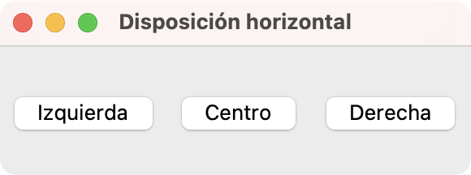
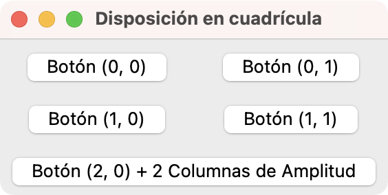
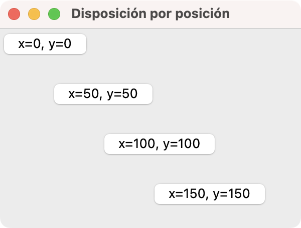
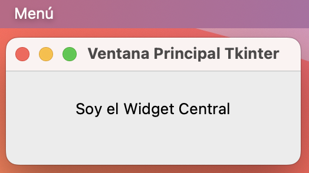

En Python, Tkinter es una biblioteca que proporciona un kit de herramientas para el desarrollo de aplicaciones de interfaz gráfica de usuario (GUI).
Tkinter es una de las bibliotecas más empleadas en el desarrollo rápido de aplicaciones GUI puesto que viene incluida con la instalación oficial de Python como parte de la biblioteca estándar.
Aprender los conceptos básicos para construir aplicaciones GUI usando Python y Tkinter es una excelente habilidad para cualquier desarrollador Python.
En este tutorial, aprenderás cómo:
- Instalar Tkinter y configurarlo en tu computadora
- Crear aplicaciones con interfaces gráficas de usuario basadas en Tkinter
- Organizar una GUI usando los gestores de geometría de Tkinter
- Crear ventanas principales y diálogos en tus aplicaciones
Para aprovechar al máximo de este tutorial, debes conocer lo básico de programación con Python, especialmente temas relacionados con la programación orientada a objetos.
Conociendo Tkinter
Tkinter es un paquete que forma parte de la biblioteca estándar de Python y está diseñado para crear interfaces gráficas de usuario (GUI). Provee acceso a las clases y objetos de la biblioteca Tcl/Tk y proporciona una manera rápida y sencilla de crear aplicaciones GUI en Python.
Tkinter es compatible con Windows, macOS y Linux, lo que te permite desarrollar aplicaciones multiplataforma sin preocuparte por las diferencias entre sistemas operativos.
Tkinter ofrece una variada gama de widgets y herramientas que puedes usar para crear interfaces de usuario interactivas. Desde botones y etiquetas hasta cuadros de texto y menús. Tkinter tiene todo lo que necesitas para desarrollar aplicaciones de escritorio en Python.
Sin embargo, a diferencia de otros frameworks y bibliotecas GUI que ofrecen componentes gráficos (widgets) y otras herramientas tales como clases para manipulación de bases de datos, trabajo con redes, y similares, Tkinter se enfoca en los componentes gráficos, la gestión de eventos y el soporte para menus y diálogos.
Instalando Tkinter
La mayoría de las distribuciones de Python ya incluyen Tkinter por defecto. Por lo tanto, es muy probable que no necesites instalarlo por separado. Sin embargo, si resulta que Tkinter no está disponible en tu sistema, puedes instalarlo de manera rápida.
En Windows y macOS
Si instalaste Python empleando el instalador oficial para Windows y macOS, entonces Tkinter ya estará instalado. Si no está disponible, puedes reinstalar Python asegurándote de que la opción de instalación de Tkinter esté habilitada.
En macOS, podría ser necesario instalar Xcode o Xcode Command Line Tools para que Tkinter funcione correctamente.
En Linux
En sistemas Linux basados en Debian, como Ubuntu, puede que al instalar Python desde los repositorios oficiales de la distribución, Tkinter no venga en el paquete. En estos casos, puedes instalar Tkinter usando el siguiente comando:
$ sudo apt install python3-tk
Este comando descargará e instalará Tkinter en tu sistema. Es decir, Tkinter estará disponible en la instalación global de Python.
Creando una aplicación Tkinter
Con Tkinter disponible, estás listo para crear tu primera aplicación GUI. Para comenzar, crearás una aplicación "Hola, mundo!". Aquí están los pasos a seguir:
- Importa
tkintercomotk. - Crea una instancia de la clase
Tk. - Define la GUI de la aplicación.
- Ejecuta el bucle de eventos de la aplicación con
.mainloop().
Crea un nuevo archivo Python llamado app.py en tu directorio de trabajo actual y escribe el siguiente código:
import tkinter as tk
En esta línea de código, importas el módulo tkinter y lo renombras como tk para facilitar su uso. Con esto, has cumplido con el primer paso.
Para completar el segundo paso, necesitas crear una instancia de Tk, la cual usualmente llamarás root:
import tkinter as tk
root = tk.Tk()
En esta línea de código, creas la instancia de Tk. Esto inicializa la aplicación y prepara el entorno para comenzar a añadir widgets a la GUI de tu aplicación.
El tercer paso consiste en crear la ventana principal de la aplicación con los elementos gráficos deseados. Para este ejemplo, la GUI se basará en un widget Label que mostrará el mensaje "Hola, mundo!".
Así es como puedes crear la GUI de la aplicación:
import tkinter as tk
root = tk.Tk()
root.title("Tkinter Demo")
root.geometry("280x80")
hello = tk.Label(root, text="Hola, mundo!", font=("Arial", 24))
hello.pack(pady=20)
En este código, el método .title() te permite establecer el título de la ventana de tu aplicación. En este ejemplo, la ventana de la aplicación mostrará Tkinter Demo en su barra de título.
Puedes usar el método .geometry() para definir el tamaño de la ventana. El argumento es una cadena que especifica el ancho y alto de la ventana en píxeles.
Cada aplicación GUI necesita widgets. Estos son los componentes gráficos que conforman la GUI de la aplicación. En este ejemplo, usas un widget Label llamado hello que te permitirá mostrar el mensaje "Hola, mundo!" en la ventana de tu aplicación.
El método .pack() es un gestor de geometría se utiliza para colocar el widget en la ventana. El argumento pady agrega un poco de espacio vertical alrededor del widget.
Has finalizado el tercer paso, así que puedes continuar con el último paso y preparar tu aplicación Tkinter para su ejecución:
import tkinter as tk
root = tk.Tk()
root.title("Tkinter Demo")
root.geometry("280x80")
hello = tk.Label(root, text="Hola, mundo!", font=("Arial", 24))
hello.pack(pady=20)
root.mainloop()
En la última línea, inicias el bucle de eventos de la aplicación ejecutando el método .mainloop(). Eso es todo. Ahora puedes ejecutar tu primera aplicación Tkinter con el siguiente comando:
$ python app.py
Al ejecutar este comando, verás una ventana que lucirá como la siguiente:

Tu aplicación muestra una ventana basada en Tk. La ventana muestra el mensaje "Hola, mundo!" usando un widget Label. ¡Y con eso, has escrito tu primera aplicación de escritorio GUI usando Tkinter y Python!
Explorando widgets comunes de Tkinter
Los widgets son componentes gráficos rectangulares que colocas en las ventanas de tus aplicación para construir su GUI. Los widgets tienen atributos y métodos que te permiten ajustar su apariencia y comportamiento.
Tkinter tiene una variada colección de widgets, cada uno de los cuales tiene un propósito diferente. Algunos de los widgets más comunes incluyen botones, etiquetas o labels, campos de entrada de texto, listas desplegables, y botones radiales.
Botones
Puedes crear un botón con la clase Button, la cual proporciona un botón de comando clásico. Algunos botones típicos son Ok, Cancelar, Aplicar, Sí, No, Cerrar, similares.
Crea un archivo llamado buttons.py y pon el siguiente código en él:
import tkinter as tk
root = tk.Tk()
root.title("Botones Tkinter")
root.geometry("190x240")
buttons = ["Ok", "Cancelar", "Aplicar", "Sí", "No", "Cerrar"]
for text in buttons:
button = tk.Button(root, text=text)
button.pack(fill="x", padx=5, pady=5)
root.mainloop()
En este ejemplo, creas botones en un bucle for que itera sobre una lista de nombres de botones comunes y crea un botón con cada uno de los nombres definidos. Así es como se verá tu aplicación al ejecutarla desde tu terminal:

Botones como estos son quizás los widgets más utilizados en cualquier GUI. Cuando alguien hace clic en ellos, tu aplicación ordena a la computadora realizar acciones. Así es como puedes ejecutar cálculos cuando un usuario hace clic en un botón.
Campos de entrada de texto
Los campos de entrada de texto son widgets comunes también. Estos widgets te permiten ingresar una sola línea de texto y puedes crearlos con la clase Entry de Tkinter. Los campos de entrada de texto son útiles cuando necesitas obtener información del usuario en forma de texto.
Como ejemplo, crea un archivo entries.py y escribe el siguiente código en él:
import tkinter as tk
root = tk.Tk()
root.title("Campos de texto Tkinter")
root.geometry("250x120")
fields = ["Nombre", "Usuario", "Contraseña"]
for field in fields:
entry = tk.Entry(root, foreground="lightgrey")
entry.insert(0, field)
entry.pack(padx=5, pady=5)
root.mainloop()
En el bucle de este ejemplo, creas tres campos de entrada de texto para permitir que el usuario introduzca su nombre, usuario y contraseña.
La captura a continuación muestra cómo debe lucir tu aplicación:

Campos de entrada de texto como estos proporcionan funcionalidades estándar como copiar, pegar y cortar. En la imagen, puedes notar que los campos muestran texto de marcador de posición (placeholder) para informar al usuario qué tipo de información debe introducir.
La clase Entry de Tkinter no tiene la opción de mostrar un texto de marcador de posición, por lo tanto, en este ejemplo lo que hiciste fue cambiar el color del texto para que sea gris claro y así simular un texto de marcador de posición.
Listas desplegables
Las listas desplegables son otro tipo fundamental de widget en aplicaciones GUI. Puedes crearlas usando la clase Combobox del módulo ttk, el cual contiene una serie mejorada de widgets para Tkinter. Una lista desplegable presenta al usuario una serie de opciones de una manera que ocupa un espacio mínimo en la pantalla.
A continuación, un ejemplo de cómo emplear una lista desplegable en Tkinter:
import tkinter as tk
from tkinter import ttk
root = tk.Tk()
root.title("Lista desplegable Tkinter")
root.geometry("250x100")
options = ["Tkinter", "PyQt", "PySide", "Kivy", "wxPython"]
selected_option = tk.StringVar(root)
selected_option.set(options[0])
combobox = ttk.Combobox(
root,
textvariable=selected_option,
values=options,
state="readonly",
)
combobox.pack(pady=20)
root.mainloop()
En este ejemplo, creas combobox como una instancia de Combobox. Esta instancia contendrá una lista desplegable con una serie de nombres de bibliotecas Python para desarrollo de aplicaciones GUI. Cuando ejecutas esta aplicación desde tu línea de comandos, obtienes una ventana como la siguiente:

Al hacer clic sobre esta lista desplegable, los usuarios pueden seleccionar una de las opciones desplegadas.
Botones radiales
El último widget que estudiarás es el botón radial, que puedes crear con la clase Radiobutton. Se trata de un botón circular de opción que puedes seleccionar al hacer clic sobre él. Los botones radiales son útiles cuando necesitas que el usuario seleccione una entre varias opciones.
Todas las opciones en un grupo de botones radiales son visibles al mismo tiempo, pero el usuario solo puede seleccionar una de ellas. Es decir, la selección es excluyente.
Considera el siguiente ejemplo:
import tkinter as tk
root = tk.Tk()
root.title("Botones radiales Tkinter")
root.geometry("230x150")
label = tk.Label(root, text="¿Qué prefieres?")
label.pack(pady=5)
foods = ["Pizza", "Hamburguesa", "Pasta", "Pollo asado"]
selected_food = tk.StringVar(root, foods[0])
for food in foods:
radio = tk.Radiobutton(
root,
text=food,
variable=selected_food,
value=food,
)
radio.pack(anchor="w", padx=5)
root.mainloop()
En este ejemplo, creas una aplicación que muestra un texto descriptivo, "¿Qué prefieres?", seguido de una serie de botones radiales, que representan alternativas entre las que el usuario puede elegir. En este caso, las alternativas son "Pizza", "Hamburguesa", "Pasta" y "Pollo asado".
Para crear los botones, empleas un ciclo for que itera sobre la lista de comidas. Por defecto, el primer botón (foods[0]) de la lista estará seleccionado.
Al hacer clic en uno de los botones, este se activa y los demás se desactivan automáticamente. Este comportamiento los hace ideales para preguntas de selección única, como preferencias o respuestas a encuestas:

En este grupo de botones radiales, solo un botón puede estar seleccionado a la vez. Si seleccionas otro botón del grupo, entonces el botón previamente seleccionado se deseleccionará automáticamente.
Tkinter ofrece una colección aceptable de widgets. Aquí, has estudiado solo una pequeña muestra, suficiente para mostrarte el poder y la flexibilidad de este framework GUI.
En la siguiente sección, aprenderás cómo organizar diferentes widgets para construir GUIs modernas y completamente funcionales para tus aplicaciones.
Usando gestores de geometría
Para construir aplicaciones GUI, necesitas saber cómo organizar un conjunto de widgets para que tu GUI sea intuitiva y funcional. En Tkinter, las herramientas para este fin son los llamados gestores de geometría.
Se trata de métodos que te permiten dimensionar y posicionar tus widgets en la ventana o formulario de la aplicación. Permiten además que tus widgets se adapten automáticamente a eventos de cambio de tamaño de ventana y otros cambios en la GUI.
Tkinter proporciona tres métodos para gestionar la geometría de una GUI determinada:
.pack(): Organiza widgets en bloques de forma sencilla, colocándolos automáticamente en la ventana según el orden especificado (arriba, abajo, izquierda o derecha)..grid(): Posiciona los widgets en una cuadrícula definida por filas y columnas, proporcionando más control sobre su posición relativa..place(): Ubica widgets en posiciones absolutas o relativas especificadas por coordenadas exactas(x, y).
En las secciones siguientes, aprenderás lo básico sobre cómo emplear estos métodos y crear GUIs ordenadas y funcionales.
Disposición por empaquetado con .pack()
El método .pack() organiza los widgets en bloques antes o después de los widgets ya empaquetados. Puedes especificar las opciones side, fill y expand para controlar cómo se comportan los widgets empaquetados.
A continuación se muestra un ejemplo de uso de .pack() para gestionar la geometría de una GUI ordenada verticalmente:
import tkinter as tk
root = tk.Tk()
root.title("Disposición vertical")
root.geometry("290x130")
buttons = ["Arriba", "Centro", "Abajo"]
for position in buttons:
button = tk.Button(root, text=position)
button.pack(fill="x", padx=5, pady=5)
root.mainloop()
En este ejemplo, el método .pack() coloca los botones uno debajo del otro en la ventana de la aplicación, rellenando horizontalmente el espacio disponible con el argumento fill y añadiendo algo de espacio a ambos lados con padx y pady:

.pack() en TkinterNota como el orden de los botones en la GUI coincide con el orden de aparición de los botones en el código.
También puedes emplear .pack() para disponer los widgets horizontalmente:
import tkinter as tk
root = tk.Tk()
root.title("Disposición horizontal")
root.geometry("290x80")
buttons = ["Izquierda", "Centro", "Derecha"]
for position in buttons:
button = tk.Button(root, text=position)
button.pack(side="left", expand=True, padx=5, pady=5)
root.mainloop()
En este ejemplo, asignas "left" al argumento side del método .pack() para alinear los botones horizontalmente y la ventana de tu aplicación lucirá como se muestra a continuación:

.pack() en TkinterCon el argumento side de .pack(), puedes lograr una configuración horizontal de los widgets en la GUI de tu aplicación.
Disposición en cuadrícula con .grid()
El método .grid() es otro gestor de geometría en Tkinter. Con él, puedes organizar los widgets en una cuadrícula de filas y columnas. Puedes especificar la fila y la columna para cada widget usando índices, lo que te permite controlar su posición exacta en la ventana.
A continuación se muestra un ejemplo de uso de .grid() para posicionar un grupo de botones:
import tkinter as tk
root = tk.Tk()
root.title("Disposición en cuadrícula")
positions = ["Botón (0, 0)", "Botón (0, 1)", "Botón (1, 0)", "Botón (1, 1)"]
for i, name in enumerate(positions):
button = tk.Button(root, text=name)
button.grid(row=i // 2, column=i % 2, padx=5, pady=5)
button = tk.Button(root, text="Botón (2, 0) + 2 Columnas de Amplitud")
button.grid(row=2, column=0, columnspan=2, padx=5, pady=5)
root.mainloop()
En este ejemplo, los botones se colocan en una cuadrícula de 2x2, lo que permite un control preciso sobre la disposición de los widgets:

.grid() en TkinterLos primeros cuatro botones ocupan una sola celda en la cuadrícula. La celda está definida por coordenadas enteras en la forma (fila, columna). El último botón ocupa dos celdas en la cuadricula. Para lograr esto, empleas el argumento columnspan con un valor de 2.
Disposición por posición con .place()
El método .place() te permite organizar los widgets en posiciones absolutas y relativas dentro de la ventana. Puedes especificar las coordenadas x e y para cada widget, lo que te permite un control preciso sobre su ubicación:
import tkinter as tk
root = tk.Tk()
root.title("Disposición por posición")
root.geometry("300x200")
tk.Button(root, text="x=0, y=0").place(x=0, y=0)
tk.Button(root, text="x=50, y=50").place(x=50, y=50)
tk.Button(root, text="x=100, y=100").place(x=100, y=100)
tk.Button(root, text="x=150, y=150").place(x=150, y=150)
root.mainloop()
En este ejemplo, los botones se colocan en posiciones absolutas dentro de la ventana, lo que permite un control preciso sobre su disposición:

.place() en TkinterPara definir la posición correcta de cada botón, debes saber que el origen de coordenadas es la esquina superior izquierda de la ventana.
Las posiciones absolutas puede ser problemáticas para la adaptabilidad de la GUI, especialmente si el usuario cambia el tamaño de la ventana o si la aplicación se ejecuta en diferentes resoluciones de pantalla. El método .place() te ayuda con estos problemas, permitiéndote especificar posiciones relativas con los parámetros relx, rely, relwidth y relheight.
Creando ventanas y diálogos
Las aplicaciones de escritorio GUI en Tkinter generalmente están conformadas por dos tipos de ventanas:
- Ventana principal: La ventana en la que se desarrolla la mayor parte de la interacción del usuario.
- Diálogos: Ventanas auxiliares de la aplicación que solicitan o muestran información al usuario.
En las secciones siguientes, aprenderás sobre ambos tipos de ventanas y cómo crearlas en Tkinter de manera que puedas construir aplicaciones funcionales y atractivas.
Ventanas principales
La mayoría de tus aplicaciones tendrán una ventana que puede incluir elementos como menús, botones y cuadros de texto. Para crear este tipo de ventana en Tkinter, utilizarás una instancia de la clase Tk.
La siguiente aplicación muestra cómo crear una ventana principal con un menú:
import tkinter as tk
root = tk.Tk()
root.title("Ventana Principal Tkinter")
root.geometry("250x80")
menubar = tk.Menu(root)
root.config(menu=menubar)
file_menu = tk.Menu(menubar, tearoff=0)
file_menu.add_command(label="Salir", command=root.quit)
menubar.add_cascade(label="Menú", menu=file_menu)
tk.Label(root, text="Soy el Widget Central").pack(pady=20)
root.mainloop()
En este ejemplo, creas un menú con una opción para salir de la aplicación. Un Label actúa como el widget central de la ventana. Cuando ejecutas esta aplicación, obtendrás una ventana que luce como la siguiente:

La ventana de tu aplicación tiene un menú principal que, en macOS, se visualiza en la barra superior del escritorio. En otros sistemas operativos, el menú principal se muestra inmediatamente debajo de la barra de título de la ventana.
Has aprendido a construir una aplicación con ventana principal usando Python y Tkinter. Lo siguiente es aprender un poco sobre cómo crear diálogos.
Mensajes de alerta y confirmación
Tkinter también proporciona una forma rápida de crear cuadros de mensaje para el usuario. Para esto, puedes emplear el modulo messagebox, el cual contiene funciones para construir diferentes tipos de diálogos de alerta y confirmación:
| Función | Descripción |
|---|---|
showinfo() |
Información con un botón Ok |
showwarning() |
Alerta con un botón Ok |
showerror() |
Error con un botón Ok |
askokcancel() |
Confirmación con botones Ok y Cancel |
askyesno() |
Confirmación con botones Yes y No |
askretrycancel() |
Confirmación con botones Retry y Cancel |
askquestion() |
Pregunta con botones Yes y No |
askyesnocancel() |
Pregunta con botones Yes, No y Cancel |
Un ejemplo común es el cuadro de diálogo de mensaje, que puedes crear usando messagebox.showinfo(). El siguiente código crea una aplicación con un botón que muestra un mensaje de información al usuario:
import tkinter as tk
from tkinter import messagebox
root = tk.Tk()
root.title("Diálogo Tkinter")
root.geometry("300x200")
def show_message():
messagebox.showinfo("Información", "Este es un mensaje informativo.")
tk.Button(root, text="Mostrar Mensaje", command=show_message).pack(pady=20)
root.mainloop()
En este ejemplo, cuando haces clic en el botón Mostrar Mensaje aparece un cuadro de diálogo informativo con un mensaje para el usuario.
Diálogos integrados
También es común que tus aplicaciones tengan diálogos para realizar acciones secundarias que dependen de la entrada del usuario. Tkinter también ofrece diálogos integrados para abrir y guardar archivos, seleccionar colores, entre otros.
A continuación un resumen de los diálogos más usados:
-
filedialog.askopenfilename(): Diálogo que permite al usuario seleccionar un archivo para abrir. Retorna la ruta completa del archivo seleccionado como una cadena. -
filedialog.asksaveasfilename(): Diálogo para que el usuario seleccione la ubicación y nombre de un archivo para guardar. Retorna la ruta completa del archivo elegido como una cadena. -
filedialog.askdirectory(): Diálogo para seleccionar una carpeta. Devuelve la ruta completa de la carpeta seleccionada. -
colorchooser.askcolor(): Selector de colores que permite al usuario elegir un color. Retorna una tupla con el valor RGB del color seleccionado y su representación hexadecimal.
El siguiente ejemplo muestra cómo usar un diálogo estándar para selecionar un archivo en tu sistema:
import tkinter as tk
from tkinter import filedialog, messagebox
root = tk.Tk()
root.title("Diálogo de Archivo Tkinter")
root.geometry("300x200")
def open_file():
file_path = filedialog.askopenfilename()
if file_path:
messagebox.showinfo(
"Archivo Seleccionado",
f"Seleccionaste: {file_path}",
)
tk.Button(root, text="Abrir Archivo", command=open_file).pack(pady=20)
root.mainloop()
En este ejemplo, un botón abre un cuadro de diálogo para seleccionar un archivo. Si se selecciona un archivo, se muestra un cuadro de mensaje con la ruta del archivo elegido.
Es importante que sepas que la función .askopenfilename() no abre el archivo, solo devuelve la ruta del archivo seleccionado. Para manipular el archivo, debes abrirlo explícitamente con Python, usando la función integrada open() u otra herramienta similar.
Conclusión
Las aplicaciones con interfaz gráfica de usuario (GUI) constituyen una parte sustancial del desarrollo de software. Python ofrece varios frameworks y bibliotecas que pueden ayudarte a desarrollar aplicaciones GUI modernas y robustas.
En este tutorial, aprendiste cómo usar Tkinter, que es una de las bibliotecas más accesibles para el desarrollo de aplicaciones GUI en Python.
En este tutorial, has aprendido a:
- Instalar Tkinter y configurarlo en tu computadora
- Desarrollar aplicaciones con GUI basadas en Tkinter
- Organizar una GUI usando gestores de geometría
- Crear ventanas principales y diálogos en tus aplicaciones Tkinter
Ahora puedes usar tus conocimientos de Python y Tkinter para dar vida a tus propias aplicaciones GUI de escritorio.